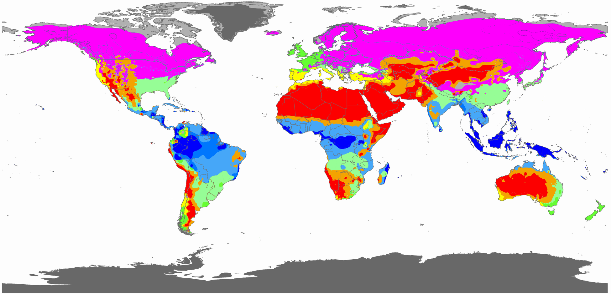
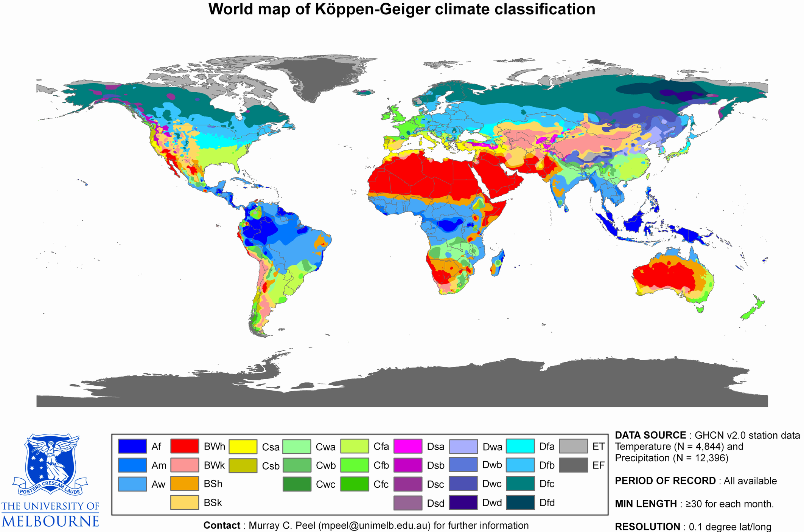

世界の気候区分
気候区分

（出典）Adpated from Peel et al (2007)
Hydrology and Earth Systems Sciences
学習目的で10分類に簡略化して色を塗りなおしている（元画像は下に掲載）
学習目的で10分類に簡略化して色を塗りなおしている（元画像は下に掲載）
上の気候区分図を見て、各色の正しい気候を選びなさい。

元画像（参考）

（出典）Peel et al (2007)
Hydrology and Earth Systems Sciences